Intro To Web Scraping

Brian Abelson | @brianabelson
Senior Data Scientist, Enigma
Fellow, Tow Center
Why Web Scraping?
- The data you want is rarely made easily accessible or in a machine-readable format.
- It's a great way to learn to code.
- Hack the Gibson!
How Does The Web Work?
Action → Request → Server → Response
- A user makes an action (for instance, submitting a search query).
- This action is translated into a request by your browser (or sometimes via JavaScript).
- A server processes this request.
- The server returns the desired response (usually a HTML, JSON or XML file) which the browser renders.
Action
Search Google for "Hack the Gibson"
Request
Your browser tranlsates your search query into a request for another web page.
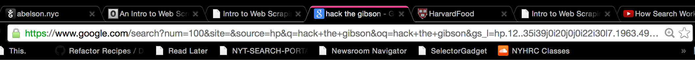
Server
This request is sent off to a server for processing.

Response
The server responds with an HTML page of search results.
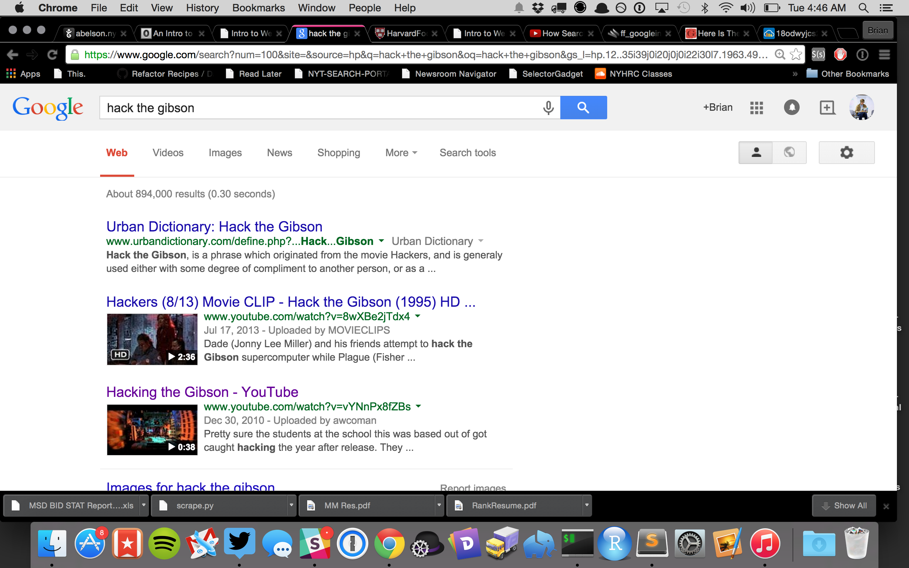
In Sum ...

The Terminal
Depending on your coding skills this is either the least or most friendly user interface ever created.

A Resource For Learning the Command Line
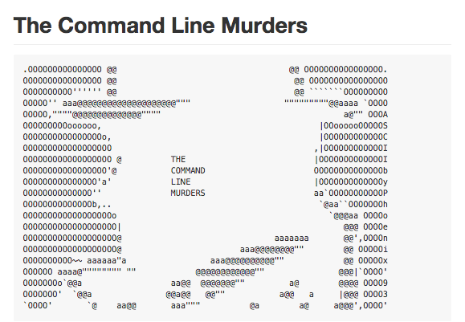
Your Turn!
What's All That URL Junk ?
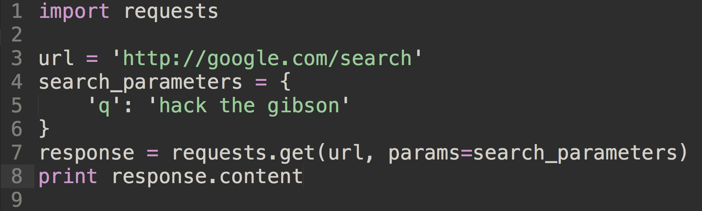
A Second Example - Wikipedia Autocompletion

Meet Your Web Inspector
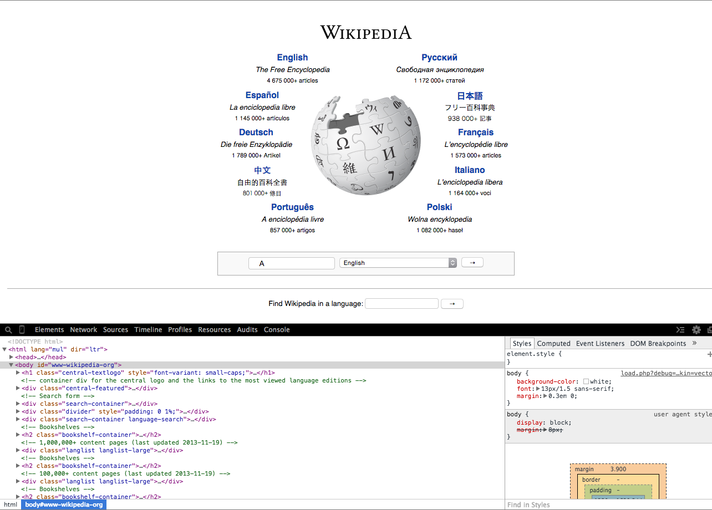
The Network Tab
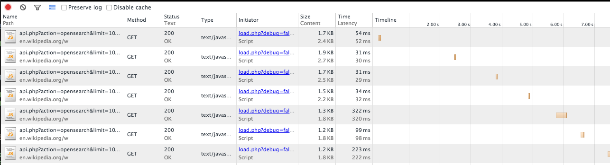
Request Inpsection
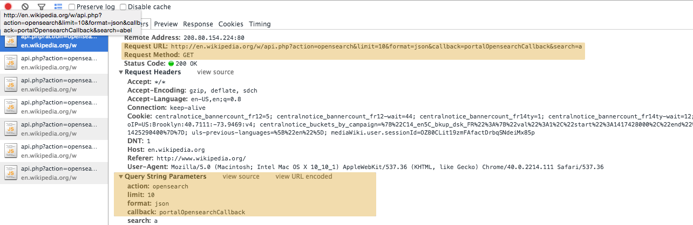
Response Inpsection
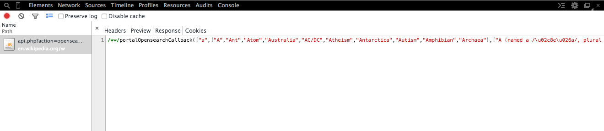
What Is JSON ?
JavaScript Object Notation
- A collection of two structures:
- Name/value pairs. (dictionary/hash)
- An array of values. (list/array)
- That's it.
What Is JSON ?

Scraping Wikipedia AutoComplete
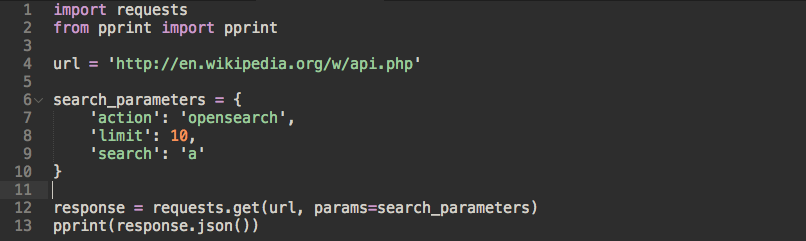
Scraping Wikipedia AutoComplete (cont.)
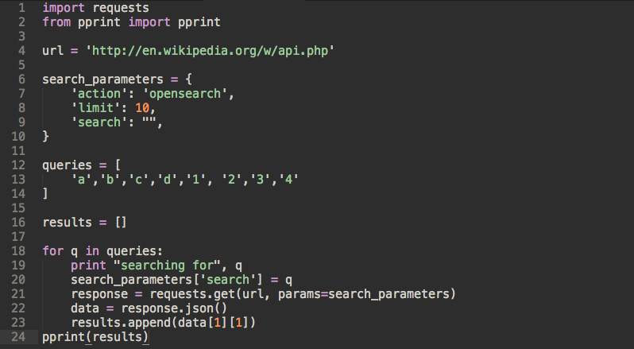
HTML Parsing
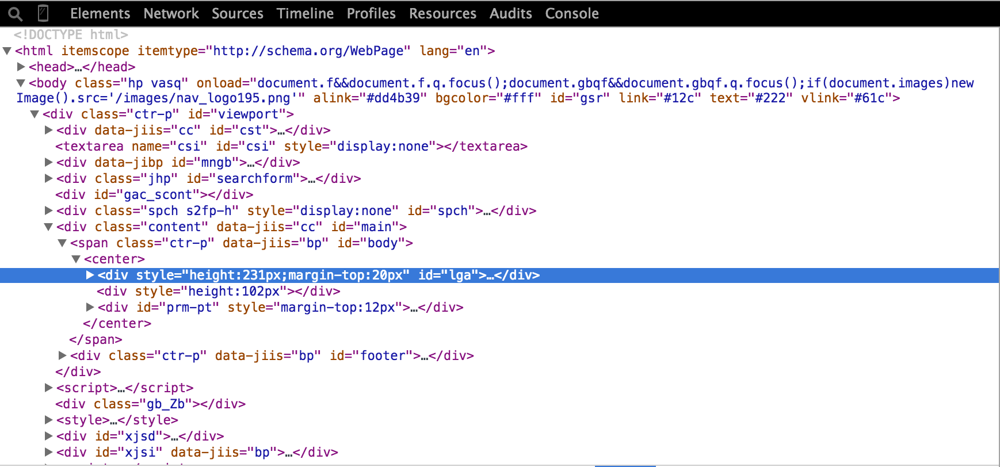
CSS Selectors

HTML Parsing (cont.)
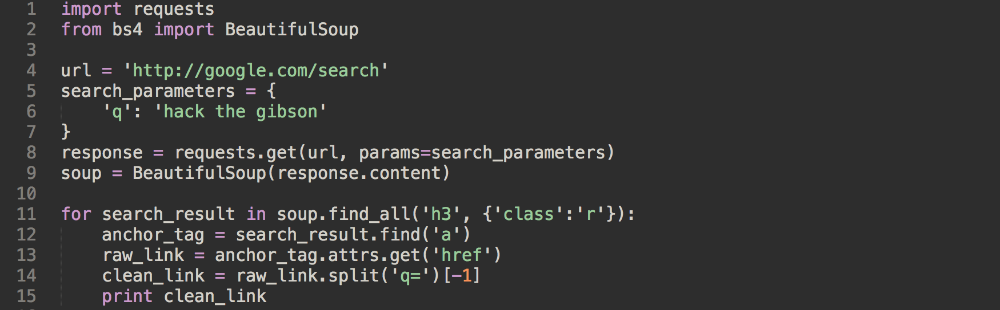